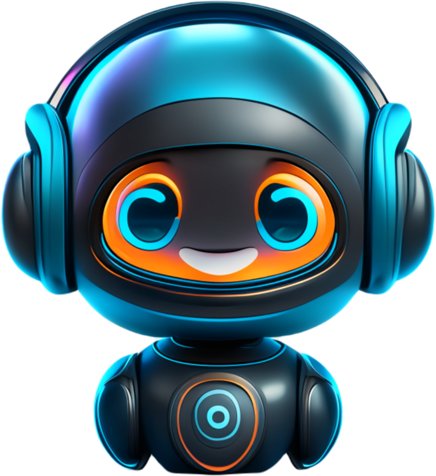

<section class="pantalla-chatbot">
  <div class="chatbot-container">

    <div class="chatbot-header">
      
      <div>
        <h2>Asistente Virtual</h2>
        <span class="estado" [ngClass]="estadoConexion"> ●
          @if (estadoConexion === 'conectado') {
          En línea
          }
          @else if (estadoConexion === 'conectando') {
          Conectando...
          }
          @else {
          Desconectado
          }
        </span>
      </div>
    </div>

    <div class="chatbot-mensajes" #contenedorMensajes>
      @for (mensaje of mensajes; track $index) {
      <div class="mensaje" [ngClass]="{
            'bot': mensaje.tipo === 'bot' || mensaje.tipo === 'typing',
            'usuario': mensaje.tipo === 'usuario',
            'system': mensaje.tipo === 'system'
          }">
        {{ mensaje.texto }}
      </div>
      }
    </div>

    <div class="chatbot-input">
      <input type="text" placeholder="Escribe tu mensaje..." [(ngModel)]="nuevoMensaje"
        (keydown.enter)="enviarMensaje()" />
      <button (click)="enviarMensaje()">Enviar</button>
    </div>

  </div>
</section>